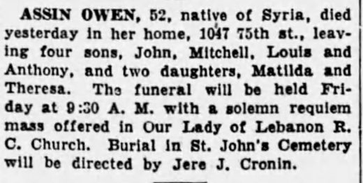
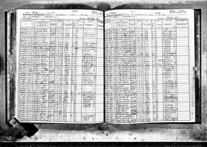

Assin crossed with Joseph and eight children in 1920 and died in Brooklyn, aged 52 by the Times Union notice (the age on the certificate is hard to read). Her son John asked for the burial permit.
- Died
- 16 October 1935, Bay Ridge Hospital, Brooklyn, aged 52 by the Times Union notice (the age on the certificate is hard to read); buried at St. John’s Cemetery on 18 October
- Spouse
- Joseph (Youseuf) Aoun
- Parents
- Joseph Segen and Susanne (the mother’s name is hard to read on the certificate) (probably)
- Children
- Nine, listed on Joseph (Youseuf) Aoun’s page
Spellings in the records: Assin Owen (death certificate), Essine (1920 passenger list), Affin (1932 notice).
Read the full story All the people
Documents about Assin Aoun
 Document 2The Grampian manifest, 1920
Document 2The Grampian manifest, 1920 Document 83Assin's death certificate (16 October 1935)
Document 83Assin's death certificate (16 October 1935)
Document 134Assin's death notice, October 1935 Document 82Joseph's death certificate (14 September 1932)
Document 82Joseph's death certificate (14 September 1932) Document 133Joseph's death notice, September 1932Documents pageSt. John's Cemetery burial search (screens saved 13 November 2026)Documents pageSix Find a Grave pages, Saint John Cemetery, Middle Village, Queens
Document 133Joseph's death notice, September 1932Documents pageSt. John's Cemetery burial search (screens saved 13 November 2026)Documents pageSix Find a Grave pages, Saint John Cemetery, Middle Village, Queens Documents pageNassib's death certificate, no. 18129 (Anthony's brother)
Documents pageNassib's death certificate, no. 18129 (Anthony's brother) Documents pageGeorge's death notices and reports (1930 to 1931) (Anthony's brother)
Documents pageGeorge's death notices and reports (1930 to 1931) (Anthony's brother)
Documents page1925 New York State census, 37 Tompkins Place, Brooklyn (Assembly District 3, Election District 6, page 10)A plain statement comes from a record we hold. “The family says” means we were told it and have not found a record. “Probably” means it fits the records but is not proven. Living relatives are not listed.